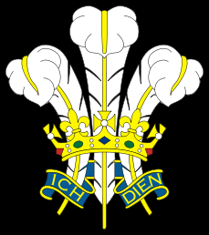
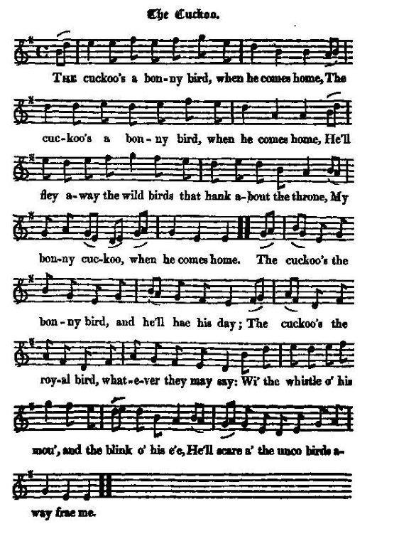

The Cuckoo
Le coucou
The "Jacobite Prince of Wales"
Le "Prince de Galles des Jacobites"

Tune - Mélodie
"The Cuckoo's nest"
from Hogg's "Jacobite Reliques" part I, N°67
Sequenced by Christian Souchon

|
The tune dates to at least the early 18th century and is extremely popular throughout the British Isles and North America. Quite a lot of different variations of the tune exist.
In the non-Jacobite versions "cuckoo's nest" often is a saucy allegory, like in this song collected by the poet John Clare (1793-1864) in Southern England: Now some likes a girl that is pretty in the face, And others likes a girl that is slender in the waist But give me the girl with a wriggle and twist That is pleasant and good-tempered with a cuckoo’s nest. "It must have been a great favourite in the last age. There are many verses, but I could not find them. I took these two verbatim from a shrewd idiot,...named William Dodds, who gave it as a quotation in a mock discourse which he was accustomed to deliver to the boys and lasses in their winter evenings,... in the style and manner of a fervent preacher..." Sources: The Fiddler's Companion (see links) and Hogg's "Jacobite Relics". |
La mélodie remonte au moins au début du 18ème siècle et est extrêmement populaire dans toutes les îles britanniques et en Amérique anglophone. Il en existe de nombreuses variantes.
Dans les versions non-Jacobites le "nid de coucou" a souvent une signification grivoise, comme dans ce chant collecté dans le sud de l'Angleterre, par le poète John Clare '1793 - 1864): Les uns aiment les files au joli minois Les autres qu'elles aient la taille fine, et moi, J'aime celles qui frétillent, J'aime celles qui tortillent Allègrement avant tout leur doux nid de coucou. "Ce chant doit avoir été un des plus en vogue autrefois. Il y a plein de couplets que je n'ai pas pu retrouver. Les deux qui suivent m'ont été dictés mot à mot par un faux naïf...du nom de William Dodds, qui me les a présentés comme une citation sortie d'une tirade qu'il avait l'habitude de débiter devant les jeunes gens lors des veillées d'hiver, en imitant le style et le ton d'un prédicateur inspiré..." Sources: "The Fiddler's Companion" (cf. liens) et Hogg's "Jacobite Relics". |

|
The Cuckoo
1. The cuckoo's a bonny bird, when he comes home, The cuckoo's a bonny bird, when he comes home, He'll fley away the wild birds that hank about the throne, My bonny cuckoo, when he comes home. The cuckoo's the bonny bird, and he'll hae the day; The cuckoo's the royal bird, whatever they may say; Wi' the whistle o' his mou', and the blink o' his e'e, He'll scare a' the unco birds away frae me. 2. The cuckoo's a bonny bird, when he comes home, The cuckoo's a bonny bird, when he comes home, He'll fley away the wild birds that hank about the throne, My bonny cuckoo, when he comes home. The cuckoo's a bonny bird, but far frae his home; I ken him by the feathers that grow upon his kame; And round that double kame yet a crown I hope to see, For my bonny cuckoo he is dear to me. Source: Jacobite Minstrelsy, published in Glasgow by R. Griffin & Cie and Robert Malcolm, printer in 1828. |
Le coucou
1. Le coucou, le bel oiseau rentre à la maison. Le coucou, le bel oiseau rentre à la maison. Et les vilains oiseaux qui voulaient lui prendre son nid, Le trône, il les chassera, dès qu'il rentre au logis. Le coucou, le bel oiseau, crois-moi, ce sera le vainqueur, En dépit, le royal oiseau, des prophètes de malheur. Ses cris mettent en émoi et ses yeux sèment l'effroi, Tous les drôles d'oiseaux, il les éloigne de moi. 2. Le coucou, le bel oiseau rentre à la maison, Le coucou, le bel oiseau rentre à la maison. Et les vilains oiseaux qui voulaient lui voler son nid, Son trône, il va les chasser, dès qu'il rentre au logis. Le coucou, le bel oiseau, pour le moment est encor loin. Grâce aux plumes sur sa tête je le reconnaîtrai bien, Formant un double plumet sur la couronne éployé, Vraiment, de tous les oiseaux, c'est le seul qui me plait. (Trad. Christian Souchon(c)2009) |
|
The song alludes to the Chevalier de Saint George (or to his son, the Prince Charles Edward). The second verse describes the Heraldic badge of the Heir Apparent (The Prince of Wales), derived from the ostrich feathers borne by Edward the Black Prince.
The Prince of Wales' crest is used to decorate pro-Jacobite broadsides with the lyrics of a song titled "(The Landing of) Royal Charlie" . |
Le chant fait allusion au Chevalier de Saint-Georges (ou à son fils, le Prince Charles Edouard). La seconde strophe est une description de l'insigne de l'héritier royal apparent (Prince de Galles), qui est orné des plumes d'autruche que portait Edouard, le Prince Noir.
L'insigne du Prince de Galles figure comme élément décoratif sur des "broadsides" où figure le texte d'un chant intitulé "(Le débarquement du) Prince Royal Charlie" |
|
|
|